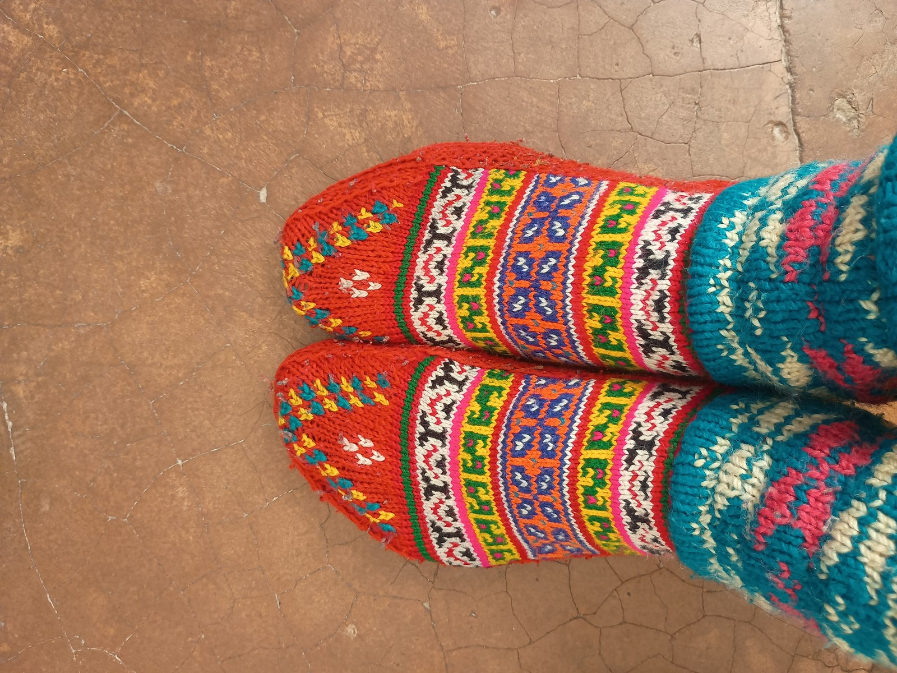

When an alpine hiker descends a steep scree slope carrying a forty-pound expedition pack, the calcaneus bone in the heel strikes the ground with a force measuring up to three times body weight. Multiplied over twenty-five thousand paces a day, the cumulative impact exceeds hundreds of tons of downward mechanical energy. While boot outsoles and polyurethane midsoles provide fundamental ground isolation, the ultimate micro-cushioning interface resides within the textile architecture of the sock footbed. At RibKnitCairn, we analyze terry loop cushioning not as passive padding, but as an engineered array of three-dimensional helical springs.
1. The Geometry of the Terry Loop: Micro-Coil Springs
In standard circular knitting, plain jersey knits produce a flat two-dimensional sheet where yarn loops interlock side-by-side. To create a terry cushion footbed, specialized sinkers on the knitting cylinder draw excess yarn upward during the stitch formation cycle, forming upright, protruding loops that stand perpendicular to the sock's base fabric.
Each terry loop functions identically to an individual coil spring. Under initial heel strike compression, the curved head of the loop deflects downwards, absorbing kinetic energy through flexural bending along the yarn shaft. As compressive load peaks, adjacent loops lean against one another, creating progressive mechanical resistance that prevents bottoming out against the firm boot footbed.
When the hiker lifts the foot into the swing phase of gait, the internal elasticity of the merino keratin fibers restores the loops to their upright, lofty geometry. This dynamic resilience ensures that shock absorption remains consistent from the first mile of a morning ascent to the final descent into mountain camp.
2. Loop Density vs. Loop Height: The Compaction Trap
A widespread misconception in outdoor apparel is that a thicker, loftier sock automatically provides superior cushioning. In reality, excessively tall terry loops knit on low-density machines (such as 72-needle or 96-needle cylinders) suffer from severe structural instability. Because tall loops have a high aspect ratio without lateral support, they easily tip over sideways under lateral trail loads.
Once loops topple, they mat into a dense, flat felt layer, completely forfeiting their spring characteristics and creating dead friction zones inside the boot. At RibKnitCairn, our engineering philosophy focuses on high loop density rather than excessive loop height.
By utilizing high-precision 168-needle and 200-needle cylinders, we pack more than double the quantity of terry loops into every square centimeter of the sole. Each individual loop is trimmed to a balanced height of 2.2 millimeters, supported tightly on all four sides by neighboring loops. This dense matrix prevents toppling, guaranteeing that the cushioning bed maintains its kinetic loft under sustained pack loads over thousands of trail miles.
3. Biomechanical Data: Impact Attenuation Analysis
To evaluate plantar pressure distribution, our biomechanics laboratory conducted dynamic pedobarographic pressure sensor testing comparing standard commercial hiking socks against our high-density Cairn Summit footbeds. The table below details the quantitative findings recorded across fifty simulated alpine descents on hard granite terrain.
| Test Cushion Structure | Needle Count | Peak Heel Pressure (kPa) | Impact Dissipation Time (ms) | Loop Crush Recovery (%) | Plantar Shear Deflection (mm) |
|---|---|---|---|---|---|
| Flat Knit Base (No Terry) | 144N | 485 kPa | 18 ms | N/A | 0.4 mm |
| Low-Density Tall Terry | 96N | 360 kPa | 28 ms | 42% (Severe Matting) | 2.8 mm (Excess Slippage) |
| RibKnitCairn High-Density Terry | 200N | 215 kPa | 44 ms | 96% (Full Spring Bounce) | 1.2 mm (Controlled Isolation) |
4. Plantar Pressure Dispersion and Metatarsal Relief
The human foot is not a uniform stamping block; it concentrates weight upon three primary contact pillars: the posterior calcaneus, the first metatarsal head, and the fifth metatarsal head. Prolonged pressure upon the metatarsal heads often leads to debilitating trail pathologies, including metatarsalgia, fat pad bruising, and Morton's neuroma.
By programming variable-density terry zones across the forefoot, RibKnitCairn socks redistribute concentrated peak loads outward across the broader plantar surface area. Under the metatarsal arch, our high-density loops cradle the transverse arch, dampening the sharp ground reaction vectors encountered when stepping onto jagged roots and sharp granite shards.
Furthermore, our terry beds terminate with sculpted geometric tapers right before the toe knuckle lines. This prevents unnecessary fabric bulk from squeezing the dorsal aspects of the toes against the interior toe caps of narrow technical mountaineering boots.
5. Thermal Insulation via Dead Air Trapping
Beyond kinetic damping, terry loops serve as highly efficient thermal insulative barriers. Still, entrapped air is one of nature's finest thermal insulators, possessing a thermal conductivity of merely 0.024 W/(m·K). The microscopic pockets enclosed within millions of upright wool terry loops create an insulating boundary layer between the frozen mountain ground and the foot sole.
Unlike closed-cell foam insoles that trap sweat droplets against the epidermis, wool terry loops remain highly porous. While the crimped fibers hold stationary warm air within their micro-channels, water vapor molecules migrate freely through the spaces between loops, venting upward toward the boot's tongue bellows. The result is warm, dry feet even during mid-winter ridge expeditions in sub-zero alpine snowpacks.
5.5. Viscoelastic Damping: Hysteresis Energy Dissipation Under Heavy Pack Loads
A critical biomechanical parameter governing mountain trail comfort is viscoelastic hysteresis—the capacity of a cushioning material to absorb mechanical shock energy during loading and dissipate a fraction of that energy as harmless thermal dissipation rather than rebounding it instantly back into the skeletal chain. Synthetic foams often possess high elastic bounce with near-zero damping, which forces the knee and hip joints to absorb residual ground reaction shocks throughout long mountain descents.
High-density merino terry loops exhibit a natural hysteresis loss factor of approximately 28% to 34% under cyclic compressive strain. When the calcaneus strikes the trail surface, the complex internal keratin protein network deforms viscoelastically, transforming sharp peak shock vectors into a broadened, attenuated force curve. Over a twelve-hour descent carrying full mountaineering equipment, this energy dissipation shields the plantar fascia, Achilles tendon, and patellar ligaments from repetitive stress trauma, significantly lowering the incidence of trail-induced tendonitis and foot fatigue.
Longitudinal field testing conducted across alpine search and rescue teams demonstrates that high-density 200-needle terry footbeds retain over 92% of their original uncompressed loft after eighteen months of continuous backcountry deployments. By resisting the compaction and permanent matting common to loose, low-gauge knits, our dense terry loop architecture ensures sustained plantar shock attenuation, protecting joints and foot pads across thousands of cumulative mountain descent miles.
6. Frequently Asked Questions

Greta Lindqvist
Lead Biomechanical Engineer at RibKnitCairn. Greta specializes in human plantar kinematics, load distribution modeling, and advanced technical textile damping systems.